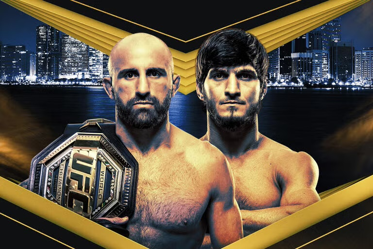

UFC 333 · Etihad Arena, Abu Dhabi · Saturday 24 October 2026

AlexanderVolkanovski
Champion · 15-3
VS
MovsarEvloev
Challenger · 10-0
Featherweight title · 5 × 5 minutes
A preview from Teo's UFC ML Predictor, an independent statistical model. Not affiliated with or endorsed by the UFC.
The model behind this preview
Teo's UFC ML Predictor
Record on fights it had never seen: 643 men's fights from 2025–26 with no debutant, the same kind of fight as this one, scored once after the model was frozen.
64.9%Winners pickedcoin flip 50%
0.640Log losslower is better coin flip 0.693
The prediction
42%AlexanderVolkanovski
Model's pick58%MovsarEvloev
50–50
Teo's UFC ML Predictor picks Movsar Evloev, but only narrowly: it gives the champion about four chances in ten. Age and wrestling pull towards Evloev; the champion's record against elite opposition and his sharper striking pull back.
How firm is it
56–60%Evloev's chance across the model's 8 versions
Track record
61%right in 240 similar fights (2025–26, men, no debutant) where it was this sure
Built from
40 inputsknown before the fight; trained on 6,276 UFC fights
Round 1Why the model leans Evloev
The model starts every fight at 50–50. Each factor then pushes the prediction towards one fighter, by a number of percentage points. These pushes come from SHAP, a method that splits a prediction into one piece per input.
← towards Evloev · 22 pts14 pts · towards Volkanovski →
Age and body12Wrestling5Record and layoff3Defence2
Quality of opposition9Striking5
Evloev's side outweighs Volkanovski's by about 8 points, which takes the champion from 50% down to 42%. Points are approximate: near 50%, one unit of the model's internal score is worth about 24 points.
AgeVolkanovski is 38, Evloev 32+11.7 pts Evloev
Quality of wins (Elo rating)Volkanovski 1947, Evloev 1827+8.8 pts Volkanovski
Head-strike accuracy49% against 43%+2.9 pts Volkanovski
Winning record15-3 against an unbeaten 10-0+2.7 pts Evloev
Body-strike accuracy68% against 74%+2.6 pts Evloev
Accuracy at range53% against 45%+2.3 pts Volkanovski
Takedown accuracy35% against 44%+2.0 pts Evloev
Takedown attempts4.4 against 7.4 per 15 minutes+2.0 pts Evloev
Everything elsethe other 32 inputs together+0.8 pts Evloev
Age is the single biggest factor. Here the six-year gap is worth about 12 points to the younger man, more than Volkanovski's whole Elo edge. Elo is his best argument: it measures who you beat, not just whether you won, and Volkanovski's wins have come against stronger opponents. Evloev's unbeaten record is built entirely on decisions (8 unanimous, 2 split or majority), which the rating counts as 0.7 and 0.55 of a win, so his Elo sits 119 points below the champion's despite the 10-0.
Round 2How the chance is calculated
The model never sees names or reputations. It turns 40 numbers about the two fighters into a chance, in four steps.
Measure
40 numbers known before fight night, mostly gaps between the two men: 6 years of age, 119 Elo points, 3 more takedown attempts per 15 minutes for Evloev.
Ask the trees
950 small decision trees each ask a few yes-or-no questions about those gaps, such as how wide the age gap is, and nudge a score up or down.
Add and average
The nudges add up to one score. Eight versions of the model, with each fighter tried in both corners, are averaged: +0.32 towards Evloev. Zero would be dead even.
Turn it into a chance
An S-shaped curve turns the score into a percentage, tuned on past fights so its percentages come true as often as they say: +0.32 becomes 58%.
The model's score runs along the bottom; the white curve turns it into a chance. Grey bars show where the 643 test fights landed: most sit near the middle, and 38% fall in the close-call zone, where neither fighter gets more than 60%.
Round 3Tale of the tape
VolkanovskiEvloev
38
Age on fight night
32
168 cm · 5′6″
Height
170 cm · 5′7″
180 cm · 71″
Reach
183 cm · 72″
15-3
UFC record
10-0
1947 #23
Elo · pound for pound
1827 #53
9 months
Since last fight
7 months
Height and reach are nearly level, so the model barely uses them here. Both layoffs are short, and barely matter here.
Round 4Two styles
Four ratings from 0 to 100, built only from the model's own inputs: each fighter's last 8 fights, compared with 616 men active in the last 18 months. 50 is the typical active fighter (dashed line).
VolkanovskiEvloev
Striking attack
67
57
Striking defence
56
73
Grappling attack
34
78
Grappling defence
75
54
A clear contrast. Volkanovski is the busier, more accurate striker and very hard to hold down. Evloev is the wrestler: he shoots often, finishes his takedowns at an elite rate and spends a large share of his fights in control, while rarely getting hurt.
The numbers behind it
Last 8 fights, smoothed towards the league average when the sample is small. "Top x%" is the rank among active men; the brighter number is the better one.
139.3top 25%
Significant strikes thrown/15 min · typical 124.1
117.5top 66%
55%top 2%
Significant-strike accuracy · typical 48%
49%top 30%
35%top 10%
Head strikes that land on him · typical 39%
35%top 5%
115.2top 31%
Significant strikes faced/15 min · typical 123.8
106.5top 17%
0.26top 74%
Knockdowns scored/15 min · typical 0.30
0.17top 99%
0.31top 57%
Knockdowns suffered/15 min · typical 0.30
0.15top 1%
4.4top 36%
Takedown attempts/15 min · typical 3.7
7.4top 9%
35%top 73%
Takedown accuracy · typical 36%
44%top 1%
65%top 45%
Takedown defence · typical 64%
60%top 82%
15%top 65%
Share of fight in control · typical 17%
30%top 10%
11%top 5%
Share of fight controlled by opponent · typical 18%
13%top 11%
Round 5The fight, as the numbers see it
Fight-week read · built only from the model and the fight data
Striker against wrestler. Volkanovski should win the exchanges at range: he lands 55% of his significant strikes (top 2% of active men), is sharper at distance (53% to 45%) and kicks the legs more than twice as often. But Evloev has never been knocked down in 10 UFC fights, so the champion's striking is more likely to bank minutes than to end the night.
Evloev's path is the takedown: about a dozen attempts over five rounds at his usual rate. Volkanovski has stopped 31 of 45 in the UFC, but Makhachev (4 of 9) and Lopes (2 of 5) got through. In March Evloev went 9 for 10 against Murphy and won on the cards while landing slightly fewer strikes.
Built to go the distance. All 10 of Evloev's UFC fights went to the judges, so rounds four and five should decide it. Volkanovski has gone 25 minutes seven times, Evloev once, but at 38 against 32 the champion faces the model's biggest single factor: age.
The readEvloev by decision, if enough takedowns land. If Volkanovski stuffs the early shots, his numbers point the other way, which is why the model stops at 58–42.
After the final bellWhat the model can't see
Five roundsIt does not know this is a 25-minute title fight. Championship rounds may favour the fresher wrestler, or the champion's experience.
Fight weekWeight cuts, training camps and injuries are not in the data.
This is an experiment in what a model built from public fight statistics can say about one fight. Treat it as one informed opinion: in fights as close as this one, it has been right about six times in ten.